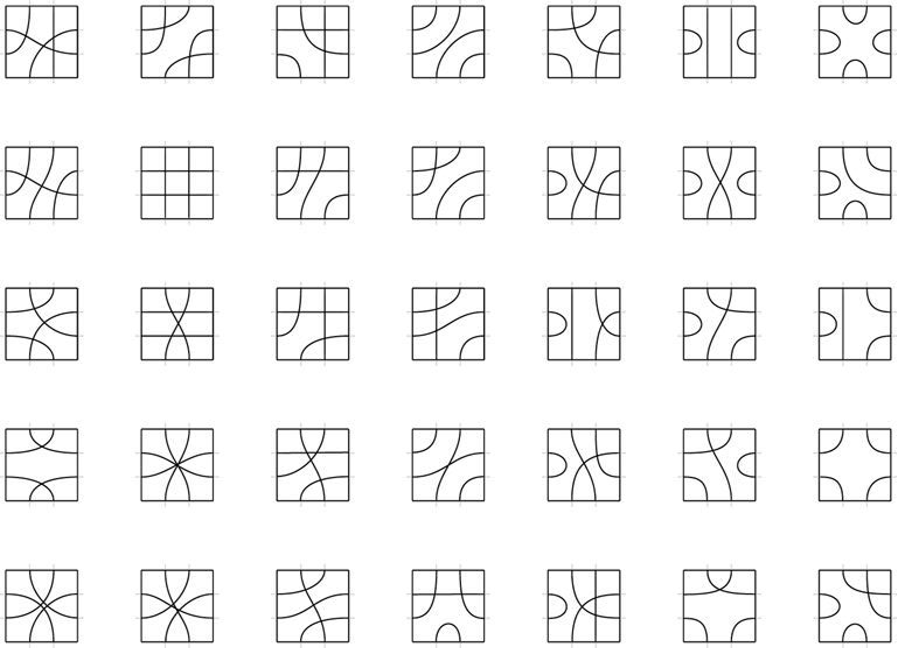
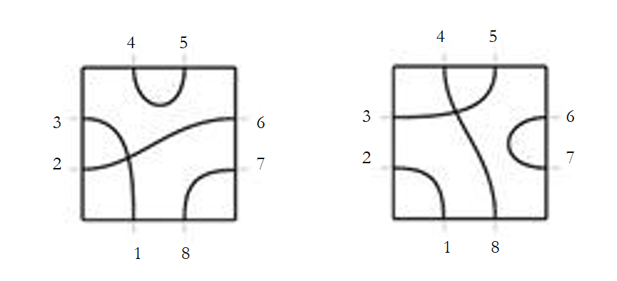
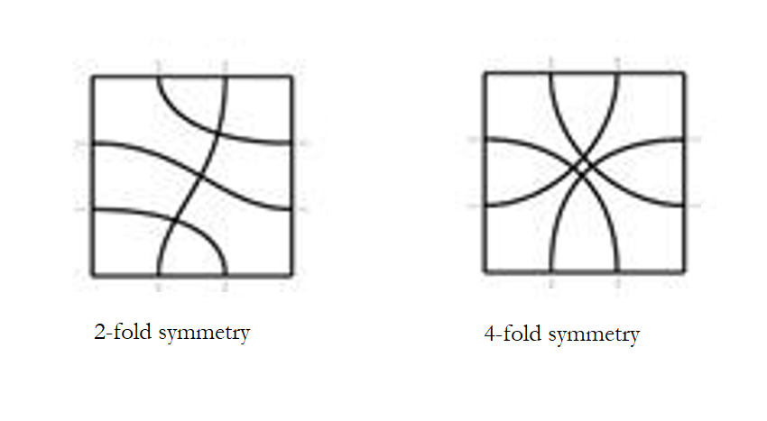

The board game Tsuro deals with tiles that look like this:
Each side of each tile has two channels, and each tile is a unique diagram pairing up the eight total channels. These 35 tiles are included - but are these all of the possible tiles? How many tiles would there be if each side had three channels, or even more?
The naive way to count the possible tiles is to consider the following process: given a blank tile, pick the “first” channel (say the bottom, left one) and choose one of the seven remaining channels to connect to. With the six remaining channels, repeat, now with five options for the remaining channels. This gives 7*5*3*1 = 105 tiles.
But this process doesn’t exactly correspond to the generation of a unique tile. The reason is that a single tile can be generated by multiple distinct processes, depending on the rotation of the tile used to determine which channel to start from.
Same tile, different processes.
The process described actually generates oriented tiles, which are tiles with a specified notion of which way is up. There are 105 oriented tiles. The tile in the figure corresponds to four oriented tiles, two of which are shown, corresponding to its four rotations. Does that mean that 105/4 is the total number of non-oriented tiles?
Well, certainly not, because 105 isn’t divisible by 4. The reason this method doesn’t work is because of symmetry. Tiles without symmetry, like that from the figure, correspond to 4 different oriented tiles, but tiles with exactly 2-fold rotational symmetry correspond to 2 different oriented tiles, and tiles with 4-fold rotational symmetry only correspond to 1 oriented tile. Note that reflectional symmetry doesn’t factor into the analysis.
So, if we can count the number of oriented tiles with exactly 1-fold symmetry (no symmetry), 2-fold, and 4-fold symmetry, we can divide each by the appropriate factor and obtain our answer.
It turns out that counting how many oriented tiles have 1-fold symmetry, but no further symmetry, or 2-fold symmetry, but not 4-fold, cannot be done directly (as far as I know). We must count the oriented tiles with at least n-fold symmetry.
We already figured out how to count oriented tiles with at least 1-fold symmetry: 7*5*3*1 = 105.
To count oriented tiles with at least 2-fold symmetry, we modify the basic process to enforce 2-fold rotational symmetry. The 1-channel can still go to any of the remaining seven channels. It could go directly to its opposite channel, 5, maintaining symmetry. This leaves six channels which must also be connected in a way that maintains 2-fold symmetry.
If it goes anywhere except 5, we must also connect 5 to the opposite of wherever 1 connected to, to maintain symmetry. This leaves only four channels, which must also be connected in a 2-fold symmetrical way.
This analysis suggests a recurrence relation. Let F2(n) be the number of ways to connect n channels in a two-fold symmetric way. The paragraphs above correspond to this equation:
F2(n) = F2(n-2) + (n-2) * F2(n-4) ← more intuitive for combinatorics
F2(2n) = F2(2(n-1)) + 2(n-1) * F2(2(n-2)) ← equivalent, clearer structure
The first term is the “connect to opposite” case, which has one option and eliminates two channels, and the second is the “choose anything but the opposite” case, which has n-2 options and eliminates 4 channels.
Let’s just say F2 is only defined on even numbers. With the base cases of F2(0) = 1, F2(-2) = 0, we can fill out a table:
| n | F2(n) |
| 0 | 1 |
| 2 | 1 |
| 4 | 3 |
| 6 | 7 |
| 8 | 25 |
Giving 25 oriented tiles with at least 2-fold symmetry.
The case for 4-fold symmetry is closely analogous. Conveniently, there are still only two cases (unlike for 3-fold symmetry) because the first channel cannot connect to the channel a quarter rotation from it. It must either connect opposite again, or connect to none of the four channels it can be rotated amongst. The recurrence relation this time is:
F4(n) = F4(n-4) + (n-4) * F4(n-8)
| n | F4(n) |
| 0 | 1 |
| 4 | 1 |
| 8 | 5 |
Giving 5 oriented tiles with at least 4-fold symmetry.
Great! There are three bins of oriented tiles: 1-fold only, 2-fold only, 4-fold only. We know that the three bins together have 105 elements, the last two bins together have 25 elements, and the last bin has 5 elements. Using simple differences, we know that the first bin has 105-25 = 80 elements, the second bin has 25-5 = 20 elements, and the last bin has 5 elements.
Dividing by the oriented tiles per non-oriented tile factor, which differs per bin, we get:
(80 / 4) + (20 / 2) + (5 / 1) = 35.
That’s it! Tsuro includes all possible tiles.
This analysis can be generalized to any number of channels per side - the symmetries considered are the same, there’s still three bins. The only difference is how many rows of the table need to be filled out using the recurrence relation.
My code computes:
| Channels per side | Total tiles |
| 0 | 1 |
| 1 | 2 |
| 2 | 35 |
| 3 | 2688 |
| 4 | 508277 |
| 5 | 163715822 |
| 6 | 79059439095 |
| 7 | 53364540054860 |
| 8 | 47974697008198312 |
| 9 | 55410773910104276992 |
| 10 | 79957746695043658285056 |
It’s amazing how fast these numbers can be generated, especially when one imagines what that set of tiles would actually look like in the physical world.
There are some obvious generalizations of the problem, which seem harder to me. If polygons other than squares, or even polyhedra or higher dimensional polytopes are considered, the structure of the symmetries will grow more complex.
Burnside’s Lemma is the general principle used to deal with overcounting due to symmetry. My calculation was presented slightly differently from that suggested by the lemma, but it is directly equivalent.